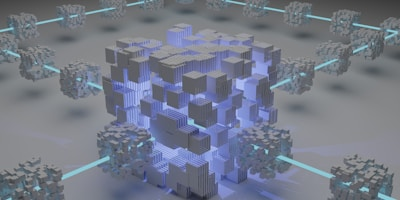

Une interface motivee par le suivi personnel et les habitudes.
Case study
IronPulse
Un dashboard sport et nutrition pour suivre des routines, lire ses performances rapidement et garder une vision claire de sa progression.

Etat
Dashboard en demo
Une version web qui met en avant le suivi des records, des sessions et du rythme hebdomadaire.
Records, sessions et suivi rapide de l evolution.
Lecture synthetique et navigation simple entre les informations.
Une base visible pour presenter le concept et l experience.
Vision
Rendre les performances plus simples a lire et plus engageantes a suivre.
IronPulse cherche a condenser l experience d une application sportive dans une interface plus directe : un espace qui montre les indicateurs utiles, pousse a garder une routine et donne envie de revenir consulter ses progres.
Ce que j ai travaille
Records personnels
Mettre en avant les performances importantes pour que l utilisateur repere vite son niveau actuel.
Planning hebdomadaire
Une lecture cadencee des sessions pour suivre l activite sur plusieurs jours sans friction.
Univers visuel energie
Un rendu sombre et impactant pour soutenir l aspect motivation, effort et progression.
Stack
Une demo front-end construite pour presenter l usage.
HTML
CSS
JavaScript
Dashboard UI
Mobile-inspired
- Hierarchie visuelle orientee tableaux de bord et indicateurs sportifs.
- Interface simple a ouvrir, lire et presenter dans un contexte portfolio.
- Demo front-end concue pour valoriser le concept avant une suite applicative plus complete.
Suite
Explorer la demo et voir le concept prendre forme.
La demo actuelle montre deja la direction produit, le type de dashboard imagine et la facon dont les donnees peuvent etre rendues plus motivantes visuellement.